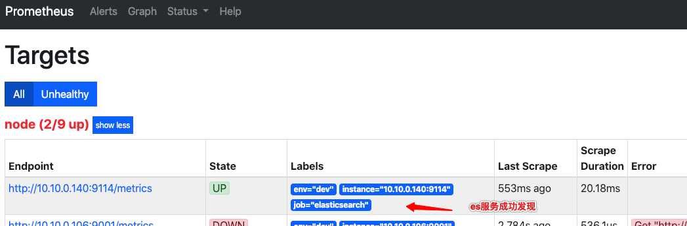
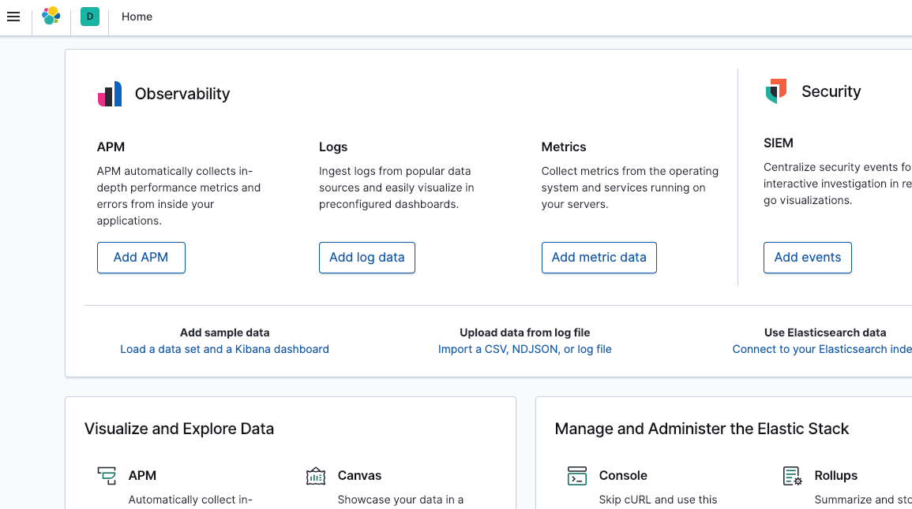

ELK集群安装配置手册（Docker版）
参考
- 官方文档
- Elastic Stack 技术指南
- 索引管理工具curator
- ELK 架构和 Filebeat 工作原理详解
- 监控方案Elasticsearch Exporter
- Prometheus博文
架构
graph TD
Beat1 -->|推| Kafka集群
Beat2 -->|推| Kafka集群
BeatN -->|推| Kafka集群
Kafka集群 -->|消费| Logstash集群
Logstash集群 -->|按Topic写| ES集群
Logstash集群 -->|冷备| HDFS
ES集群 -->|读| Kibana
安装
Elasticsearch
# 准备外挂目录
mkdir /opt/elasticsearch
chmod 777 /opt/elasticsearch
# 开发环境，单节点，限制内存，禁用swap，外挂数据
docker pull elasticsearch:7.8.1
docker run -d \
--name=elasticsearch \
-p 9200:9200 \
-p 9300:9300 \
-v /opt/elasticsearch:/usr/share/elasticsearch/data \
-e "discovery.type=single-node" \
-e "ES_JAVA_OPTS=-Xms2000m -Xmx2000m" \
-m 2g \
--memory-swap="2g" \
elasticsearch:7.8.1
# 验证
curl 0.0.0.0:9300
注意事项
- 宿主机的
/etc/sysctl.conf设置vm.max_map_count=262144，sysctl -p起效 - 调大单个进程可以拥有的VMA(虚拟内存区域)的数量，否则容易OOM
监控方案
基于Prometheus Exporter
# 新建elasticsearch_exporter目录
mkdir /opt/elasticsearch_exporter
cd /opt/elasticsearch_exporter
# 生成docker-compose.yml，参考下文
# 运行
docker-compose up -d
# docker-compose.yml，用于定义elasticsearch_exporter的启动参数
elasticsearch_exporter:
image: justwatch/elasticsearch_exporter:1.1.0
command:
- '--es.uri=http://10.10.0.140:9200'
restart: always
ports:
- "0.0.0.0:9114:9114"
在Prometheus配置服务发现
// sd_config.json添加相关服务
{
"targets": [
"10.10.0.140:9114"
],
"labels": {
"env": "dev",
"job": "elasticsearch"
}
},
注册成功如图

通过Prometheus的HTTP API确认ES集群的存活，如'curl http://10.10.0.140:9090/api/v1/query?query=elasticsearch_cluster_health_up'
反馈json如下：
{
"status": "success",
"data": {
"resultType": "vector",
"result": [
{
"metric": {
"__name__": "elasticsearch_cluster_health_up", // 唯一Metric，其他是tag
"env": "dev",
"instance": "10.10.0.140:9114", // 对应es的Exporter地址
"job": "elasticsearch"
},
"value": [
1598001650.145, // 采集的最后时间戳
"1" // 值，根据Metric定义
]
}
]
}
}
常用指标
| 指标 | 监控目标 | 类型 | 单位 | 意义 |
|---|---|---|---|---|
| elasticsearch_cluster_health_up | 集群 | gauge | 字典 | ES集群的存活状态，1=运行；0=宕机 |
| elasticsearch_cluster_health_active_shards | 集群 | gauge | 正整数 | 分片总数量，包括副本 |
| elasticsearch_cluster_health_unassigned_shards | 集群 | gauge | 正整数 | 未分配的分片数，大于总分片数的50%，代表集群异常 |
| elasticsearch_jvm_memory_max_bytes | node | gauge | byte | jvm最大内存数，由Xmx指定 |
| elasticsearch_jvm_memory_used_bytes{area="heap"} | node | gauge | byte | node的jvm使用的堆内存数，大于总内存的90%代表异常 |
| elasticsearch_filesystem_data_used_percent | 集群 | gauge | 百分比 | 已用磁盘百分比 |
elasticsearch_filesystem_data_used_percent = 100 * (elasticsearch_filesystem_data_size_bytes - elasticsearch_filesystem_data_free_bytes) / elasticsearch_filesystem_data_size_bytes
# 接Prometheus的常用告警规则elasticsearch.rules.yml
# calculate filesystem used and free percent
elasticsearch_filesystem_data_used_percent = 100 * (elasticsearch_filesystem_data_size_bytes - elasticsearch_filesystem_data_free_bytes) / elasticsearch_filesystem_data_size_bytes
# alert if heap usage is over 90%
ALERT ElasticsearchHeapTooHigh
IF elasticsearch_jvm_memory_used_bytes{area="heap"} / elasticsearch_jvm_memory_max_bytes{area="heap"} > 0.9
FOR 15m
LABELS {severity="critical"}
ANNOTATIONS {description="The heap usage is over 90% for 15m", summary="ElasticSearch node {{$labels.node}} heap usage is high"}
Kibana
docker pull kibana:7.8.1
docker run \
--link elasticsearch:elasticsearch \
-p 5601:5601 \
kibana:7.8.1
访问http://主机:5601查看效果

Kafka
参考 kafka教程
Logstash
docker pull logstash:7.8.1
# 准备放配置的目录
mkdir /opt/logstash
chmod 777 /opt/logstash
cd /opt/logstash
# 生成相关配置文件，参考下面
# 启动
docker run -d \
--name=logstash \
--volume=/opt/logstash/:/usr/share/logstash/config/ \
--rm \
-m 2g \
-p 9600:9600 \
-t logstash:7.8.1 \
-f /usr/share/logstash/config/logstash.conf
# logstash.yml用于配置
http.host: "0.0.0.0"
# logstash.conf用于说明pipeline
input {
# syslog
kafka {
bootstrap_servers => "10.10.0.106:32775,10.10.0.106:32776"
topics => ["syslog"]
codec => "json"
consumer_threads => 3
id => "syslog"
}
}
filter {
grok {
match => { "message" => "%{SYSLOGTIMESTAMP:syslog_timestamp} %{SYSLOGHOST:syslog_hostname} %{DATA:syslog_program}(?:\[%{POSINT:syslog_pid}\])?: %{GREEDYDATA:syslog_message}" }
add_field => [ "received_at", "%{@timestamp}" ]
}
date {
match => [ "syslog_timestamp", "MMM d HH:mm:ss", "MMM dd HH:mm:ss" ]
}
}
output {
# 进内部es
elasticsearch {
hosts => ["10.10.0.140:9200"]
index => "syslog-%{+YYYY.MM.dd}"
id => "dev-es"
# 指定模板，解决单节点有副本，造成集群状态yellow的问题
template => "/usr/share/logstash/config/syslog.json"
template_name => "syslog-*"
template_overwrite => true
}
}
// syslog.json，由于默认1分片1副本，会在单实例上造成unassign shard，导致yellow，这里设置不要副本
{
"template": "syslog-*",
"settings": {
"number_of_replicas" : 0
}
}
Filebeat
# 安装解压
curl -L -O https://artifacts.elastic.co/downloads/beats/filebeat/filebeat-7.8.1-linux-x86_64.tar.gz
tar xzvf filebeat-7.8.1-linux-x86_64.tar.gz
mv filebeat-7.8.1-linux-x86_64 filebeat
cd filebeat
# 生成配置文件filebeat_syslog.yml
# 测试配置是否正确
./filebeat test config -c filebeat_syslog.yml
# 如果需要读系统log，需要filebeat的权限chown root
# 启动
./filebeat -e -c filebeat_syslog.yml
filebeat.inputs:
# filebeat_syslog.yml 用于采集本机syslog
- type: log
enabled: true
paths:
- /var/log/messages
fields:
kafka_topic: syslog # 和kafka上定义的topic对应
# 忽略1h前的内容
# ignore_older: 1h
# 输出
#output.console:
# pretty: true
output:
kafka:
hosts: ["10.10.0.106:32775", "10.10.0.106:32776"]
topic: '%{[fields][kafka_topic]}'
compression: snappy